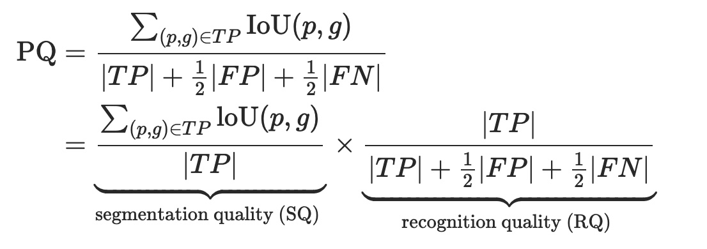

Evaluation
In semantic segmentation, IoU and per-pixel accuracy is used as a evaluation criterion. In instance segmentation, average precision over different IoU thresholds is used for evaluation. For panoptic segmentation, a combination of IoU and AP can be used, but it causes asymmetry for classes with or without instance-level annotations. That is why, a new metric that treats all the categories equally, called Panoptic Quality (PQ), is used.
Read more about evaluation metrics.
As in the calculation of AP, PQ is also first calculated independently for each class, then averaged over all classes. It involves two steps: matching, and calculation.
Step 1 (matching): The predicted and ground truth segments are considered to be matched if their IoU > 0.5. It, with non-overlapping instances property, results in a unique matching i.e. there can be at most one predicted segment corresponding to a ground truth segment.

Step 2 (calculation): Mathematically, for a ground truth segment g, and for predicted segment p, PQ is calculated as follows.

Here, in the first equation, the numerator divided by TP is simply the average IoU of matched segments, and FP and FN are added to penalize the non-matched segments. As shown in the second equation, PQ can divided into segmentation quality (SQ), and recognition quality (RQ). SQ, here, is the average IoU of matched segments, and RQ is the F1 score.